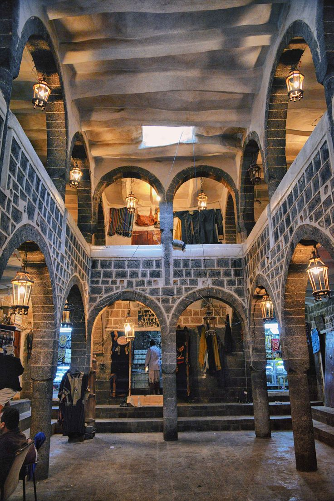

أهلا بيكم في موقع تراث اليمن 🇾🇪
هنا بتقدروا تشوفوا جمال التراث اليمني وتتعرفوا عليه بطريقة حلوة

تراث اليمن الجميل

عمارة يمنية تقليدية

قرية جبال هراز الحلوة

تراث يمني متنوع وجميل
أهم عناصر التراث اليمني
هنا بتقدر تشوف أهم الأشياء في تراثنا اليمني

معرض الصور التراثية
عن تراث اليمن
اليمن أرض الحضارات العريقة والتراث الأصيل
يمتد التراث اليمني لآلاف السنين، حيث كانت اليمن مهد الحضارات القديمة مثل مملكة سبأ وحمير. يتميز التراث اليمني بتنوعه وثراءه، من العمارة الطينية المذهلة في صنعاء القديمة وشبام، إلى المأكولات الشعبية الغنية بالنكهات، والأزياء التقليدية المميزة.
مميزات التراث اليمني:
- ✅ عمارة طينية فريدة من نوعها
- ✅ مطبخ غني بالتوابل والنكهات
- ✅ أزياء تقليدية متنوعة
- ✅ فنون وحرف يدوية عريقة